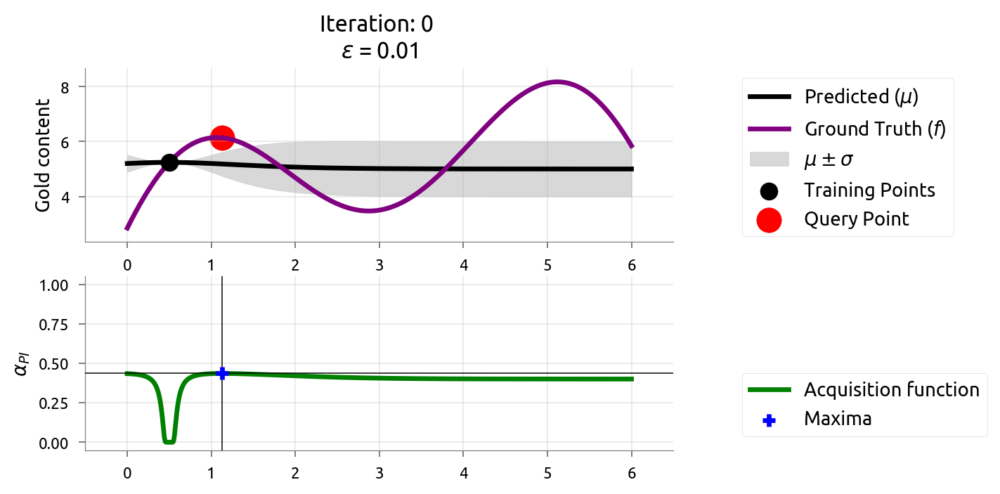
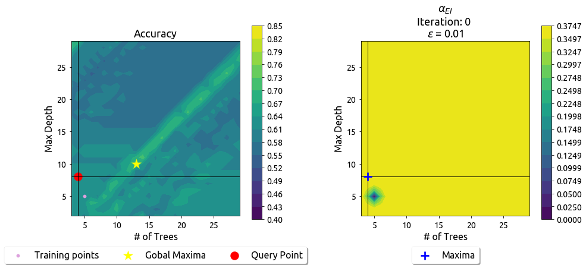

Breaking Bayesian Optimization into small, sizeable chunks.
Many modern machine learning algorithms have a large number of hyperparameters. To effectively use these algorithms, we need to pick good hyperparameter values.
In this article, we will talk about Bayesian Optimization (BO), a suite of techniques often used to efficiently tune the hyperparameters, optimization parameters, and other model parameters. More generally, BO can be used to optimize any black-box function.
However, before we talk in-depth about using BO to tune model parameters, we will study using BO to maximize (optimize) a black-box function.
Mining Gold!
Let us start with the example of gold mining. Our goal is to mine for gold in a new, unknown landInterestingly, our example is similar to one of the first use of Gaussian Process (GP) (also called kriging), where Prof. Krige modelled gold concentrations using GPs..
For now, let us make a simplifying assumption, the gold content lies in a one-dimensional space, i.e., we are talking about gold distribution only about a line. We want to find the location along this line with the maximum gold while only drilling a few times (as drilling is expensive).
Initially, we have no idea about the gold distribution. The only way to learn it is to drill at different locations. However, this drilling is costly. Thus, we want to minimize the number of drillings required while still finding the location of maximum gold quickly.
We now discuss two common objectives for the gold mining problem.
Problem 1: Best Estimate of Gold Distribution (Active Learning)
Here we want to estimate the amount of gold on the one-dimensional line, using a small number of drillings. We can not drill at every location due to the prohibitive cost. Instead, we should drill at those locations that provide us with the maximum information about the distribution of the gold. This problem is akin to
active learning.
Problem 2: Location of Maximum Gold (Bayesian Optimization)
Here we want to find the location in the one-dimensional space where the gold quantity is the maximum, using a small number of drillings. This problem is akin to
Bayesian Optimization (BO).
We will soon see how the two problems are related, but not the same.
Active Learning
For many machine learning problems, unlabeled data is readily available. However, labeling (or querying) could be an expensive task which one would like to minimize. As an example, for a speech-to-text task, the annotation requires expert(s) to label words and sentences manually. More often, this is a time consuming and expensive task. In our gold mining problem, drilling (akin to labeling) is an expensive operation. Active learning provides a way to minimize labeling while maximizing modeling accuracy. While there are various methods in the active learning literature, we will only look at uncertainty reduction. This method chooses the most uncertain point as the next query point. Often, the variance acts as a measure of uncertainty.
Surrogate Model
Active learning (along with BO, which we will see later) employs a surrogate model for modeling the unknown true function f(x). The surrogate model ideally models the true function closely. In our example, f(x) denotes the true gold content on our new land, and unquestionably we do not know f(x).
Bayesian Update
Every evaluation (drilling) of f(x) gives the surrogate model more data to learn. The posterior for the surrogate is obtained using the Bayes Rule with this new data at every iteration. At the end of an iteration, the posterior becomes the prior for the next cycle.
Commonly, surrogates employ Gaussian Processes. One can set priors of a Gaussian Process (GP) by using specific kernels and mean functions. Moreover, GPs provide predictions as well as uncertainty estimates. We leverage these quantities in both active learning and BO.
Gaussian Processes
One might want to look at this excellent Distill article on Gaussian Processes.
We will use Gaussian Process Regression to model the gold distribution.
Let us visualize our true function f(x). The gold distribution in our data is bi-modal, with a maximum value around x = 5. For now, let us not worry about the X-axis or the Y-axis units.
Prior Model
We define a prior over a set of functions based on our initial beliefs of the black-box function. The prior tries to capture the properties of the black-box function, which include periodicity, smoothness, among others. In our case, we consider the gold distribution to be smooth. We use kernels to set a prior that favors smooth functions. We use a Matern 5/2 kernel due to its property of favoring doubly differentiable functions. In contrast, Matern 3/2 favors singly differentiable functions.
See Rasmussen and Williams 2004 and scikit-learn, for details regarding the Matern kernel.
The black line and the grey shaded region indicate the mean (\mu) and uncertainty Technically we plotted (\mu \pm \sigma ) in our gold distribution estimate before drilling.
Adding Training Data
Let us now add the point < x = 0.5, \ y = f(0.5) > to the training set.
We see our surrogate's changed posterior Shown as the prediction is conveying the certainty in gold content near x = 0.5. Moreover, the predicted gold concentration of points near x = 0.5 is close to the actual value that we got from drilling.
Active Learning Procedure
Choose and add the point with the highest uncertainty to the training set (by querying/labeling that point)
Train on the new training set
Go to #1 till convergence or budget elapsed
Let us now visualize this process and see how our posterior changes at every iteration (after each drilling).
Choosing the most uncertain location leads to querying of the points that are the farthest from the current set of train points. The visualization clears that one can estimate the true distribution in a few iterations. At every iteration, active learning explores
the domain to make the estimates better.
Bayesian Optimization
In this problem we aim to find the location of maximum gold content. The setting is similar to problem 1, but the objectives are different. Bayesian Optimization (BO) is an optimization technique that solves problem 1, i.e., maximizing a black-box function, whereas active learning focuses on getting a good estimate of that black-box function.
One way to find the maximum would be to first run active learning and then select the point giving the maximum. However, in a sense, we waste evaluations to improve the estimates even though we are only concerned with finding the point giving the maximum. Assuming that our black-box function is smooth, it might be a good idea to evaluate at or near locations where our surrogate model's prediction is the highest, i.e., to exploit. However, due to the limited evaluations, our model's predictions are inaccurate as well. One can improve the model by evaluating at points with high variance or performing exploration. BO combines exploitation and exploration, whereas active learning solely explores.
Formalizing Bayesian Optimization
Let us now formally introduce Bayesian Optimization. Our goal is to find the location ({x \in \mathbb{R}^d}) corresponding to the global maximum (or minimum) of a function f: \mathbb{R}^d \mapsto \mathbb{R}.
We present the general constraints based on the slides/talk from Peter Fraizer at Uber on Bayesian Optimization:
in BO and contrast them with the constraints in our gold mining example.
General Constraints
Constraints in Gold Mining example
f’s feasible set A is simple,
e.g., box constraints.
Our domain in the gold mining problem is a single-dimensional box constraint: 0 \leq x \leq 6.
f is continuous but lacks special structure,
e.g., concavity, that would make it easy to optimize.
Our true function is neither convex nor concave function resulting in local optimas.
f is derivative-free:
evaluations do not give gradient information.
Our evaluation (by drilling) of the amount of gold content at a location did not give us any gradient information.
f is expensive to evaluate:
the number of times we can evaluate it
is severely limited.
Drilling is costly.
f may be noisy. If noise is present, we will assume it is independent and normally distributed, with common but unknown variance.
We assume noiseless measurements in our modeling (though, it is easy to incorporate normally distributed noise for GP regression).
Our gold mining problem is suited to use BO. Let us introduce some additional topics before you run to get the maximal gold for yourself!
Acquisition Functions
Our original optimization problem, x^* = \text{argmax}_{x \in A} f(x) is hard because f is expensive to evaluate.
The idea of BO is to transform the original optimization into a sequence of easier inexpensive optimizations of functions called an acquisition functions (\alpha(x)).
Intuitively, acquisition functions are heuristicshttps://botorch.org/docs/acquisition that evaluate the utility of a point for maximizing the underlying black-box function (f(x))Please find these slides from Washington University in St. Louis to know more and the following .
At each step, we optimize the acquisition function to determine the next point to sample.
Let us re-wind and link the things discussed thus far, by noting the steps of BOPlease find this amazing video from Javier González at The Gaussian Process Summer School 2019. and explicitly highlighting the "Bayesian" in BO.
We first choose a surrogate model for modeling the true function f and define its prior
Given the set of observations (function evaluations), use Bayes rule to obtain the posterior.
Use an acquisition function \alpha(x), which is a function of the posterior, to decide the next sample point x_t = \text{argmax}_x \alpha(x).
Add newly sampled data to the set of observations and goto Step #2 till convergence or budget elapses.
Thus, the "Bayesian" in BO is sequentially refining our surrogate's posterior (and thus uncertainty) with each evaluation via Bayesian posterior updating.
Let us now look at a few common acquisition functions.
Probability of Improvement (PI)
In this acquisition function, we evaluate the point with the highest probability of improvement over the current max f(x^+), where x^+ = \text{argmax}_{x_i \in x_{1:t}}f(x_i) and x_i is the location queried at i^{th} time step.
This acquisition function essentially is the left tail probability of the surrogate posterior.
Let f(x^+) be the current highest value of the function
Looking closely, essentially we are finding a value from the CDF of the probability distribution at each location. If our surrogate is a GP we can obtain an analytical expression, enabling cheap calculation of \alpha_{PI}.
PI uses \epsilon to strike a balance between exploration and exploitation.
Increasing \epsilon results in the locations with a larger \sigma to have higher \alpha_{PI} as their probability density is spread more due to higher uncertainty.
Now that we possess the intuition behind \epsilon, let us see the effects of changing it.

Looking at the graph aboveTies are broken randomly., we see that we reach the global maxima in a few iterations.
Our surrogate possesses a large uncertainty in x \in [2, 4]This can be identified by the grey translucent area. in the first eight-nine iterations.
The acquisition function initially exploits regions with high promisePoints in the vicinity of current maxima which leads to a high uncertainty in the region x \in [2, 4]. This observation also shows that we do not need to construct an accurate estimate of the black-box function to find its maximum.
The visualization above shows that increasing \epsilon to 0.3, enables us to explore more. However, it seems that we are exploring more than required.
What happens if we increase \epsilon a bit more?
We see that we made things worse! Our model now uses \epsilon = 3, which has effectively resulted in way too much exploration. This amount of exploration is not able to exploit when we land near the global maximum.
Our quick experiments above help us conclude that \epsilon controls the degree of exploration in the PI acquisition function.
Expected Improvement (EI)
Probability of improvement only looked at how likely is an improvement, but, did not consider how much we can improve? The next criterion, called Expected Improvement (EI), does exactly thatA good
introduction to the Expected Improvement acquisition function is by this post by Thomas Huijskens and these slides by Peter Frazier!
The idea is fairly simple - choose the next point as the one which has the highest expected improvement over the current max f(x^+), where x^+ = \text{argmax}_{x_i \in x_{1:t}}f(x_i) and x_i is the location queried at i^{th} time step.
In this acquisition function, t + 1^{th} query point, x_{t+1}, is selected according to the following equation.
Where, f is the actual ground truth function, h_{t+1} is the posterior mean of the surrogate at t+1^{th} timestep, \mathcal{D}_t is the training data \{(x_i,
f(x_i))\} \ \forall x \in x_{1:t} and x^\star is the actual position where f takes the maximum value.
In essence, we are trying to select the point that minimizes the distance to the objective evaluated at the maximum. Unfortunately, we do not know the ground truth function, f. Mockus proposed
the following acquisition function to overcome the issue.
where f(x^+) is the maximum value that has been encountered so far. This equation for the case of GP surrogate, can be converted an analytical expression shown below.
where \Phi(\cdot) indicates CDF and \phi(\cdot) indicates pdf.
From the above expression, we can see that Expected Improvement will be high when the expected value of \mu_t(x) - f(x^+) is high, or when the uncertainty \sigma_t(x) around a point is high.
Like the Probability of Improvement's acquisition function, we can moderate the amount of explorability of the Expected Improvement's acquisition function by setting the \epsilon hyperparameter.
For \epsilon = 0.01 we come close to the global maxima in a few iterations.
We now increase \epsilon to explore more.
As we expected, increasing the value to \epsilon = 0.3 makes the acquisition function explore more. Compared to the earlier evaluations, we see less exploitation. We see that it evaluates only two points near the global maxima.
Let us increase \epsilon even more.
Is this better than before? It turns out a yes and a no. We see that here we do too much exploration, given the value of \epsilon = 3. This results in early reaching something close to global maxima, but unfortunately, we do not exploit to get more gains near the global maxima.
PI vs. EI
We have seen two closely related methods, The Probability of Improvement and the Expected Improvement.
In the figure below, we make a scatter plot showing the policies' acquisition functions evaluated on different points in the domain (each dot is a point in the domain). In this plot, our train set consists of a single point (0.5, f(0.5)).
We can see that the \alpha_{EI} and \alpha_{PI} reach a maximum of 0.3 and around 0.44, respectively. Choosing a point with low \alpha_{PI} and high \alpha_{EI} is high risk (probability of improvement is low) and high reward (expected improvement is high).
If multiple points have the same (\alpha_{EI}), we should prioritize the point with lesser risk (higher \alpha_{PI}). Similarly, when the risks are the same (same \alpha_{PI}) for any two points, we should choose the point with greater reward (higher \alpha_{EI}).
Thompson Sampling
Another common acquisition function is Thompson Sampling . At every step, we sample a function from the surrogate's posterior and optimize the sampled function. For example, in the case of the gold mining, we’d sample a plausible distribution of the gold given the evidence we have so far and evaluate wherever it peaks.
Below we have an image showing three sampled functions from the learned surrogate posterior for our gold mining problem. The training data constituted the point x = 0.5 and the corresponding functional value.
The intuition behind Thompson sampling can be understood by noticing two important observations.
Locations x with high variance (\sigma(x)) will show a larger variance in the functional values sampled from the surrogate posterior. This can aid exploration as high variation can lead to sampled functions with a high value at locations with high variance. This will ensure an exploratory behavior.
As an example, the three samples (sample #1, #2, #3) show high variance close to x=6. Optimizing sample 3 would lead to sampling x=6 and thus lead to exploration.
The sampled functions will need to pass through or closely from the current max value (due to low \sigma(x)) at the evaluated locations. This will
ensure an exploiting behavior of the acquisition function.
As an example of this behavior, we see that all the sampled functions pass through the current max at x = 0.5. If x = 0.5 was close to the global maxima then we would be able to exploit and choose a better maximum.
Notice that Thompson Sampling only required us to sample our posterior, not evaluate probabilities. This is a very useful property when there isn’t an easy way to evaluate probabilities.
We now show a visualization of the Thompson sampling acquisition function.
Random
We have been using intelligent acquisition functions until now.
If we were to chose our evaluation positions x
randomly, we effectively will have changed our acquisition function
to a Random acquisition function.
Summary of Acquisition Functions
Before we go ahead and provide an empirical comparison of different acquisition functions, let us summarize the core ideas associated with acquisition functions: i) they are heuristics for evaluating the utility of a point; ii) they are a function of the surrogate posterior; iii) they combine exploration and exploitation; and iv) they are inexpensive to evaluate
Other Acquisition Functions
We have seen various acquisition functions until now. One trivial way to come up with acquisition functions is to have a explore/exploit combination.
Upper Confidence Bound (UCB)
One such trivial acquisition function that combines the exploration/exploitation tradeoff is a linear combination of the mean and uncertainty of our surrogate model. The model mean signifies exploitation (of our model's knowledge) and model uncertainty signifies exploration (due to our model's lack of observations).
\alpha(x) = \mu(x) + \lambda \times \sigma(x)
The intuition behind the UCB acquisition function is weighing of the importance between the surrogate's mean vs. the surrogate's uncertainty. The \lambda above is the hyperparameter that can control the preference between exploitation or exploration.
We can further form acquisition functions by combining the existing acquisition functions though the physical interpretability of such combinations might not be so straightforward. One reason we might want to combine two methods is to overcome the limitations of the individual methods.
Probability of Improvement + \lambda \ \times Expected Improvement (EI-PI)
One such combination can be a linear combination of PI and EI.
We know PI focuses on the probability of emprovement, whereas EI focuses on the expected improvement. Such a combination could help in having a tradeoff between the two based on the value of \lambda, which can be a function of the timestep itself.
Gaussian Process Upper Confidence Bound (GP-UCB)
Before talking about GP-UCB, let us quickly talk about regret. Imagine if the maximum gold was a units, and our optimization instead samples a location containing b < a units, then our regret is
a -
b. If we accumulate the regret over n iterations, we get what is called cumulative regret.
GP-UCB's formulation is given by:
Srinivas et. al. developed a schedule for \beta that they theoretically demonstrate to minimize cumulative regret.
Comparison
We now compare the performance of different acquisition functions on the gold mining problemTo know more about the difference between acquisition functions look at these amazing
slides from Nando De Freitas. We have used the optimum hyperparameters for each acquisition function.
We ran the random acquisition function several times with different seeds. We have plotted the mean and the standard deviation (only for random acquisition (shown in shaded blue region)) below. We can see the standard deviation (variance) of the random acquisition is high, which is expected as we are randomly
choosing points x to evaluate our black-box function f.
We see that the on average, the random acquisition strategy struggles to find a good solution, whereas the other methods are more efficient in the number of iterations to find a good solution. Most acquisition functions reach fairly close to the global maxima in as few as three iterations.
Why is it beneficial to optimize the acquisition function?
We have replaced the original optimization problem (optimizing the given black-box function) to another optimization problem (optimization of acquisition function). How is this any better than the last problem? Evaluating the acquisition function is much cheaper. In contrast, the original black-box function is extremely costly to evaluate, by definition.
Hyperparameter Tuning
Before we talk about Bayesian optimization for hyperparameter tuning, we will quickly differentiate between hyperparameters and parameters: hyperparameters are set before learning and the parameters are learnt from the data. To illustrate the difference, we take the example of Ridge regression.
In Ridge regression, the weight matrix \theta is the parameter, and the regularization coefficient \lambda \geq 0 is the hyperparameter.
If we solve the above regression problem via gradient descent optimization, we further introduce another optimization parameter, the learning rate \alpha.
The most common use case of Bayesian Optimization is hyperparameter tuning: finding the best performing hyperparameters on machine learning models.
When training a model is not expensive and time-consuming, we can do a grid search to find the optimum hyperparameters. However, grid search is not feasible if functional value is extremely costly, as in the case of a large neural network that takes days to train. This might result in days of waiting to get the accuracy scores. Further, grid search scales poorly in terms of the number of hyperparameters.
We turn to BO to counter the expensiveness of getting the functional values (accuracy values) and these increased dimensions.
Example 1 -- Support Vector Machine
Let us use an SVM on sklearn's moons dataset and try to find the optimal hyperparameter using BO. Let us have a look at the dataset first.
We solve the classification problem using Support Vector Machine (SVM). SVMs have two important hyperparameters,
\gamma -- modifies the behavior of the SVM's kernel. Intuitively it is a measure of the influence of a single training exampleStackOverflow answer for intuition behind the hyperparameters..
C -- modifies the slackness of the classification, the higher the C is, the more sensitive is SVM towards the noise.
Let us apply Bayesian Optimization to learn the best hyperparameters for this classification taskNote: the surface plots you see for the Ground Truth Accuracies below were calculated for each possible hyperparameter for showcasing purposes only. We do not have these values in real applications.
. The optimum values for <C, \ \gamma> have been found via running grid search at high granularity.
Above we see a slider showing the work of the Probability of Improvement acquisition function in finding the best hyperparameters.
Above we see a slider showing the work of the Expected Improvement acquisition function in finding the best hyperparameters.
Comparison
Below we will compare the acquisition functions in finding the best hyperparameters for our SVM model. We had again run the Random acquisition function several times with different seeds.
We see all our acquisition functions other than the random were able to reach the best possible solution. We see the random method seemed to perform much better initially, but it could not beat the BO framework at the end of the optimization. The initial subpar performance of BO is attributed to the initial exploration.
Other Examples
Example 2 -- Random Forest
Using Bayesian Optimization in a Random Forest Classifier.
We will continue now to train a Random Forest on the moons dataset we had used previously to learn the Support Vector Machine model. The primary hyperparameters of Random Forests we would like to optimize our accuracy are the number of
Decision Trees we would like to have, the maximum depth for each of those decision trees.
The parameters of the Random Forest are the individual trained Decision Trees models.
We will be again using Gaussian Processes with Matern kernel to estimate and predict the accuracy function over the two hyperparameters.
Above we see a gif showing the work of the Probability of Improvement acquisition function in finding the best hyperparameters.

Above we see a gif showing the work of the Expected Improvement acquisition function in finding the best hyperparameters.
Above we see a gif showing the work of the Gaussian Processes Upper Confidence Bound acquisition function in finding the best hyperparameters.
Let us now use the Random acquisition function.
Looking at the ground truth, we see the black-box function we are trying to optimize is not too smooth, and therefore we see that our optimization strategies seem to struggle compared to the last example. This shows that the effectiveness of BO depends on the surrogate's efficiency to model the actual black-box function. It is still interesting to notice that the BO framework beats the random strategy.
Example 3 -- Neural Networks
Let us take this example to get an idea of how to apply Bayesian Optimization to training neural networks like CNNs on Mnist. Here we will be using scikit-optim, which also provides us support for
optimizing
our function on a mix of categorical, integral, and real variables. We will not be plotting the ground truth here, as it is extremely costly to do so. Below are some code snippets that go into adding Bayesian Optimization for hyperparameter
tuning.
The code below declares the search space for the optimization problem (hyperparameter tuning). In this example we are limiting the search space to be the following:
batch_size -- Our search space for the possible batch sizes consists of integer values s.t. batch_size = 2^i \ \forall \ 2 \leq i \leq 7 \ \& \ i \in \mathbb{Z}.
This hyperparameter sets the number of training examples to combine to find the gradients for a single step in gradient descent.
learning rate -- We will be searching all the real numbers from the range [10^{-6}, \ 1]. We will be using logarithmic uniform distribution as our prior distribution if we are to sample random points from this space.
This hyperparamter sets the stepsize with which we will perform gradient descent in the neural network.
activation -- We will have one categorical variable, i.e. the activation to apply to our neural network layers. This variable can take on values in the set \{ relu, \ sigmoid \}.
Moving on, we have a minimizer function imported from scikit-optim called gp-minimize. One can change the acquisition function from a number of available options.
Below we have a code snippet showing the calling of the optimization function with the Expected Improvement acquisition function.
Note: One will need to negate the accuracy values as we are using the minimizer function from scikit-optim.
We now have the hyperparameters that have maximized your accuracy. In the graph above the y-axis denotes the \left( f(x^+) \right) and the x-axis denotes the number of times we have queried (t)
the neural network with some set of given hyperparameters.
We can apply the BO for more dimensions (more hyperparameters), even if the dimensions which are categorical (as 'relu' vs 'sigmoid' above) can be incorporated into BO as it is done in scikit-optim.
Looking at the above example, we can see that incorporating Bayesian Optimization isn't a big problem and saves a lot of time we can see that the network was able to get to an accuracy of nearly one in around three iterations. That is
impressive! The example above has been inspired by Hvass Laboratories' TutorialNotebook showcasing hyperparameter
optimization in Tensorflow. on scikit-optim.
While running the experiment on our laptops, each of the evaluation cost us an approximate of 15 minutes. Looking at the number of evaluations required by the Bayesian Optimization approach, we were able to get to an accuracy of nearly 1.0 in just 5 iterations.
The parameters selected by the optimizer were [4, 0.0019, 'relu'], i.e., batch size of 8, learning rate of 1.9e-2 and 'relu' activation function.
If we had performed a naive grid search, it would have taken us a lot more iterations (5 \times 2 \times 7), and we still would not have tested a learning rate near the learning rate returned by the optimizer. Suppose using grid search resulted in us taking twenty-five iterations. If we convert it to the time we spent over the Bayesian Optimization approach, we will get a better idea of the amount of time that can be saved when evaluation of the ground truth functions is even more costly.
We would have saved around five hours by using BO for our hypothetical scenario of using Grid Search.
Conclusion and Summary
In this article, we looked at Bayesian Optimization, which involves optimizing a black-box function. Our primary focus is on the cases when the function evaluations are expensive, making grid or exhaustive search impractical. We looked at the key components of BO. First, we looked at the notion of using a surrogate function (with a prior over the space of objective functions) to model our black-box function. Next, we looked at the "Bayes" in BO - the function evaluations are used as data to obtain the surrogate posterior. We look at acquisition functions, which are functions of the surrogate posterior and are optimized sequentially. This new sequential optimization is in-expensive and thus of utility of us. We also looked at a few acquisition functions and showed how these different functions balance exploration and exploitation. Finally, we looked at some practical examples of BO for optimizing hyper-parameters for machine learning models. We believe we have presented an interesting and effective suite of black-box optimization techniques. We now hope that we have whetted the reader's appetite!
Embrace Bayesian Optimization
Optimizing or tuning hyperparams is an important facet of modern machine learning algorithms and BO is an efficient way of tuning the same.
Having read all the way through, you might have been sold on the idea about the time you can save by asking Bayesian Optimizer to find the best hyperparameters for your fantastic model. There are a plethora of Bayesian Optimization libraries available. We have linked a few below. Do check them out.
scikit-optimizeReally nice tutorial showcasing hyperparameter optimization on a neural network available at this link.
We hope you had a good time reading the article and hope you are ready to exploit the power of BO. In case you wish to explore more, please read the Further Reading section
below.
Acknowledgements
This article was made possible with inputs from numerous people. Firstly, we would like to thank all the Distill reviewers for their punctilious and actionable feedback. These fantastic reviews immensely helped strengthen our article. We further express our gratitude towards the Distill Editors, who were extremely kind and helped us navigate various steps to publish our work. We would also like to thank Dr. Sahil Garg for his feedback on the flow of the article. Lastly, we would like to acknowledge the help we received from Christopher Olah and the Writing Studio to improve the script of our article.
Further Reading
Using gradient information when it is available.
Suppose we have gradient information available, we should possibly try to use the information. This could result in a much faster approach to the global maxima. To know more about this exciting domain of research look at the paper by
Wu, et. al..
To have a quick view of differences between BO and Gradient Descent, one can look at this amazing answer at StackOverflow.
We talked about optimizing a black-box function here. If we are to perform over multiple objectives, how do these acquisition functions scale? There has been fantastic work in this domain too! We try to deal with these cases by having multiobjective acquisition functions. Have a look at this excellent notebook for an example using gpflowopt.
One of the more interesting uses of hyperparameters optimization can be attributed to searching the space of neural network architecture for finding the architectures that give us maximal predictive performance. One might also want to consider multiobjective optimizations as some of the other objectives like memory consumption, model size, or inference time also matter in practical scenarios.
When the datasets are extremely large, human experts tend to test hyperparameters on smaller subsets of the dataset and iteratively improve the accuracy for their models. There has been work in Bayesian Optimization, taking into account these approaches when datasets are of such sizes.
There also has been work on BO, where one explores with a certain level of "safety", meaning the evaluated values should lie above a certain security threshold functional value. One toy example is the possible configurations for a flying robot to maximize its stability. If we tried a point with terrible stability, we might crash the robot, and therefore we would like to explore the configuration space more diligently.
We have been using GP in our BO for getting predictions, but we can have any other predictor or mean and variance in our BO.
One can look at this slide deck by Frank Hutter discussing some limitations of a GP-based Bayesian Optimization over a Random Forest based Bayesian Optimization.
There has been work on even using deep neural networks in BO for a more scalable approach compared to GP. The paper talks about how GP-based Bayesian Optimization scales cubically with the number of observations, compared to their novel method that scales linearly.
Things to take care when using BO.
While working on the blog, we once scaled the accuracy from the range [0, \ 1] to [0, \ 100]. This changed broke havoc as the Gaussian Processes we were using had certain hyperparameters, which needed
to be scaled with the accuracy to maintain scale invariance. We wanted to point this out as it might be helpful for the readers who would like to start using on BO.
We need to take care while using Bayesian Optimization. Bayesian Optimization based on Gaussian Processes Regression is highly sensitive to the kernel used. For example, if you are using Matern kernel, we are implicitly assuming that the function we are trying to optimize is first order differentiable.
Searching for the hyperparameters, and the choice of the acquisition function to use in BO are interesting problems in themselves. There has been amazing work done, looking at this problem. As mentioned previously in the post, there has
been work done in strategies using multiple acquisition function to deal with these interesting issues.
A nice list of tips and tricks one should have a look at if you aim to use Bayesian Optimization in your workflow is from this fantastic post by Thomas on Bayesian
Optimization with sklearn.
BO applications.
BO has been applied to Optimal Sensor Set selection for predictive accuracy.
Pater Faizer in his talk mentioned that Uber uses Bayesian Optimization for tuning algorithms via backtesting.
Facebook uses Bayesian Optimization for A/B testing.